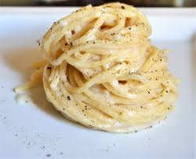

Spaghetti cacio e pepe
Ingredienti
Di seguito riportiamo gli ingredienti per preparare il nostro piatto
- Spaghetti 400 g
- Pecorino romano stagionatura media, da grattugiare 200 g
- Pepe nero in grani q.b.
- Sale fino q.b.
Prepazione
- Cominciate mettendo su l’acqua per la pasta, ricordandovi di salarla poco per non rischiare di ottenere una pasta troppo sapida. Tranquilli, al gusto ci penserà il pecorino!
- A questo punto, occupiamoci del sugo. Sebbene in molti utilizzino la parola cacio per riferirsi al formaggio in generale, per fare questa pasta si usa solo ed esclusivamente il pecorino romano! Prendete la forma e grattugiatela per interno, dopodiché lasciate il formaggio da parte.
- Ora dobbiamo andare a creare la classica cremina di formaggio, e per farlo bisogna far sciogliere il formaggio con dell’acqua. Ma come fare per evitare la formazioni di grumi, e creare quello spiacevolissimo effetto colla? Semplice, con l’acqua di cottura! L’amido rilasciato dalla pasta, infatti, ostacolerà la tendenza delle proteine di coagulare al contatto con il calore. Per farlo, ci sono due differenti modi. Il primo è quello di scolare la pasta in padella con qualche mestolo di acqua di cottura, mantecarla con il pecorino e saltarla, fino a quando non otterrete la giusta cremosità. Ma se volete un metodo ancora più sicuro, potete frullare con un minipimer a immersione il formaggio con l’acqua: versate un paio di mestoli alla volta, verificando la consistenza, poi aggiungete la pasta e mescolate.
- Non vi resta che aggiungere il pepe nero (abbondante, chiaramente, se no che senso avrebbe!) e servire la pastasciutta immediatamente. Il piatto è pronto, buon appetito!
- Servire il piatto